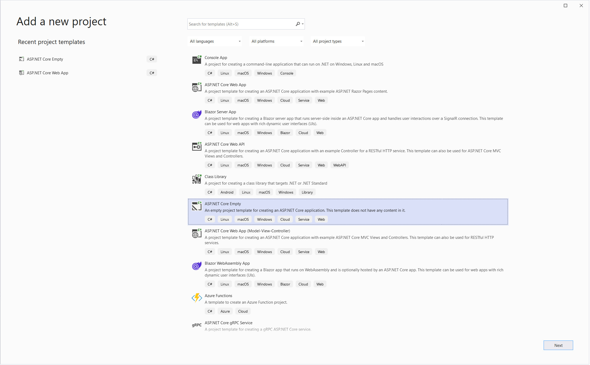

Prerequisites
AdminUI License
Before getting started you will need an AdminUI License Key which you can get from our products page.
Database Providers Supported
You will also need an OpenIddict installation and either a database set up in:
- MySql
- SqlServer
- PostgreSql
There is an OpenIddict sample available on our GitHub.
OpenIddict Server Integration
The first step needed in preparing for running AdminUI for OpenIddict is integrating your OpenIddict with AdminUI. These will include these following tasks.
-
Setup Identity: For setting up Identity you have multiple options,
- Integrate IdentityExpress schema (If using ASP.Net and want migrate to use AdminUIs default identity stores)
- Add custom identity stores (Only when using a custom Identity model)
Basic Installation
All-In-One Template
If you don't already have an OpenIddict solution, or just want to have a quick look to all the things AdminUI can do, you should try the All-In-One template.
This template provides the fastest way to set up a solution that includes AdminUI with an integrated OpenIddict sample. Follow the step-by-step guide for detailed instructions on getting started.
Samples
A sample of the below steps can be found in our sample repo on GitHub
From Scratch
When starting from scratch we recommend you create a project from the ASP.NET Core Empty template. This can be done through the Visual Studio GUI:

Or from the .NET CLI using dotnet new web with your parameters of your choice. More info can be found in the Microsoft Documentation
Get the AdminUI NuGet package
You can install the Rsk.AdminUI.OpenIddict NuGet package using the .NET CLI (dotnet add package Rsk.AdminUI.OpenIddict), Powershell (Install-Package Rsk.AdminUI.OpenIddict), or your GUI of choice.
On first build the package will copy over the relevant static files into your wwwroot folder in a new admin folder e.g: wwwwroot/admin.
On run it will serve from this folder on the base path of the project (e.g http://localhost:5000/).
Configuration
AdminUI configuration can be set using environment variables, appsettings.json and in code, passing a settings object to the AddAdminUI() method. The structure of AdminUIs settings is defined in AdminUI Settings.
Basic configuration
Please read our configuration page for more info
You can find sample configuration in our sample repo
- UiUrl - The URL AdminUI is run on
- AuthorityURL - The URL of your OpenIddict server.
- IdentityConnectionString - The database connection string of your Identity database
- OpenIddictConnectionString - The database connection string of your OpenIddict database
- AdminUIClientSecret - A random secret value
- LicenseKey - The key you were provided with when you purchased the product or obtained a demo
Configure a Database connection
AdminUI currently only supports MySql, PostgreSQL, SqlServer, and SqlExpress.
Any database must accept remote connections. Ensure that your firewall allows connections on any used ports.
Using the package
AddAdminUI()
Register AdminUI in your service collection using the AddAdminUI() extension method. This method will add all the AdminUI services into the DI container.
In the OpenIddict server you can register the entity sets with your desired Id key type. For example,if you want to use int (numbers) as your entities Id, the code could look like this:
services.AddDbContext<ApplicationDbContext>(options =>
{
...
options.UseOpenIddict<int>();
});
Similarly you need to provide the Id key types to AdminUI by the AddAdminUI() method:
services.AddAdminUI<int>();
The AddAdminUI() extension method can also be used to pass a settings object containing the configuration:
services.AddAdminUI(new OpenIddictAdminUISettings()
{
// AdminUI configuration settings
...
});
UseAdminUI()
The UseAdminUI() extension method executes AdminUI:
app.UseAdminUI();
Example of all together
var builder = WebApplication.CreateBuilder(args);
builder.Services.AddAdminUI();
var app = builder.Build();
app.UseAdminUI();
app.Run();